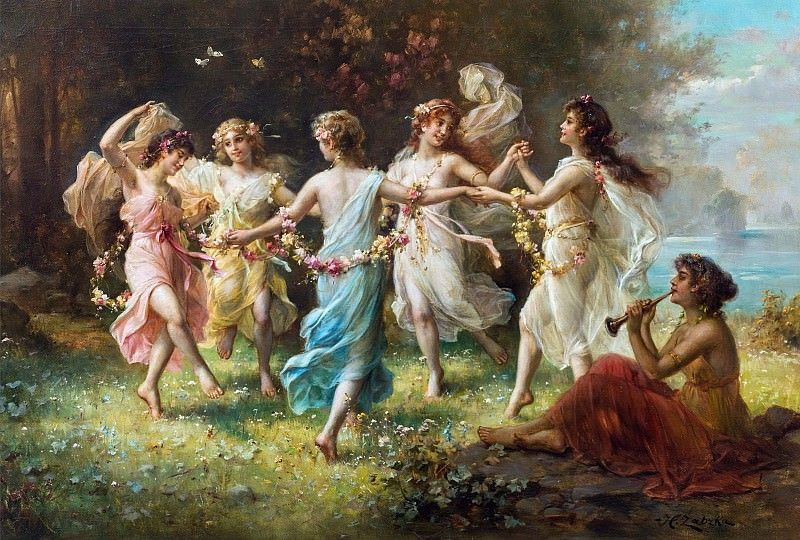

O Girls' Room surgiu a partir de uma proposta prática desenvolvida dentro da disciplina de Desenvolvimento Web Front-End, ministrada pelos professores Wesley Dias Maciel e Rommel Carneiro.
O projeto foi a oportunidade perfeita para aplicar e praticar, de forma progressiva, o conteúdo de manipulação de HTML, CSS e JavaScript, além de outras ferramentas modernas do ecossistema web.
Idealizado e desenvolvido pela aluna Maria Heloiza do curso de Sistemas de Informação, o portal foi criado com o objetivo de ser um lugar de acolhimento — um espaço que funciona como um 'quarto de mulheres', onde o diálogo, a escuta e as boas ideias se encontram para inspirar a comunidade feminina.